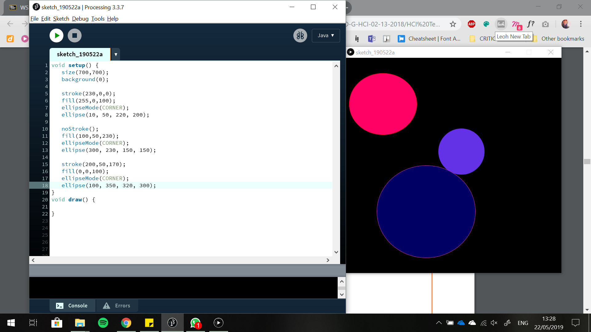
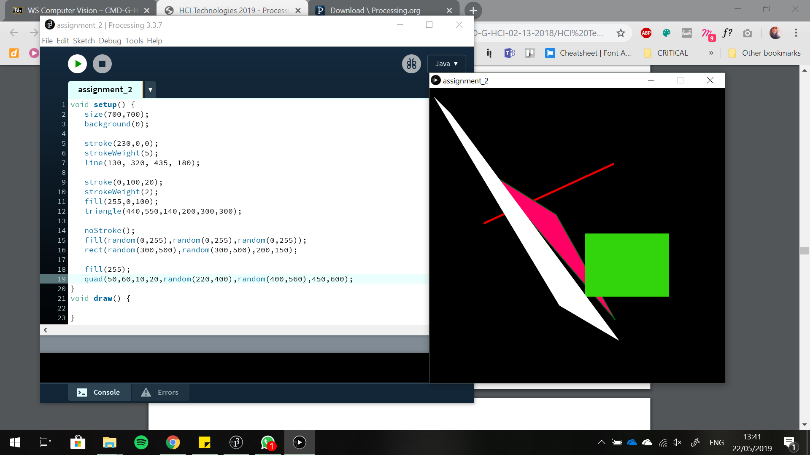
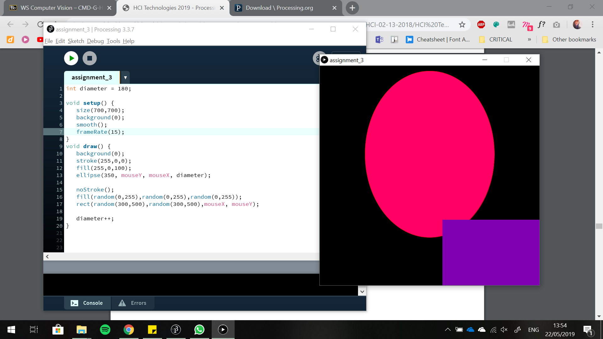
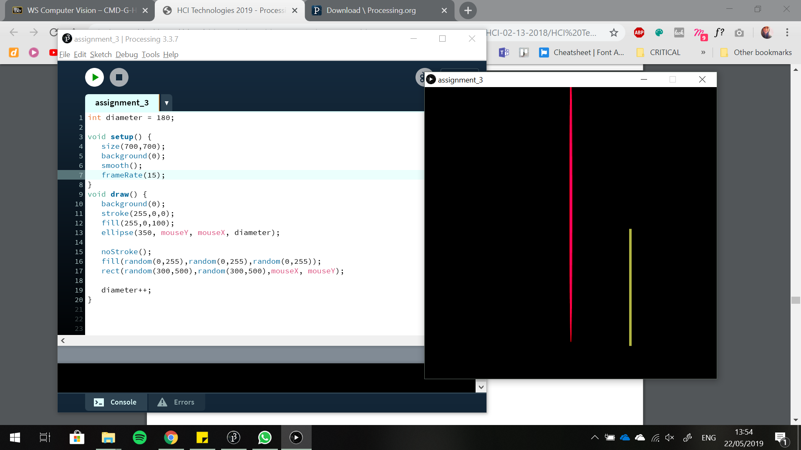
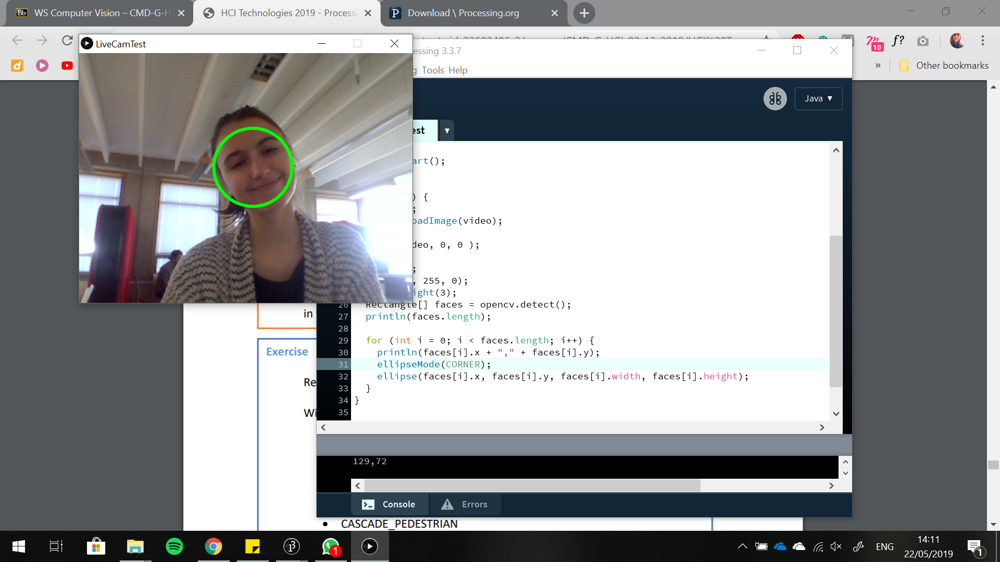
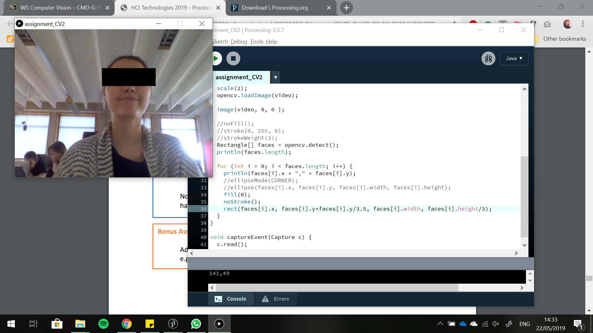
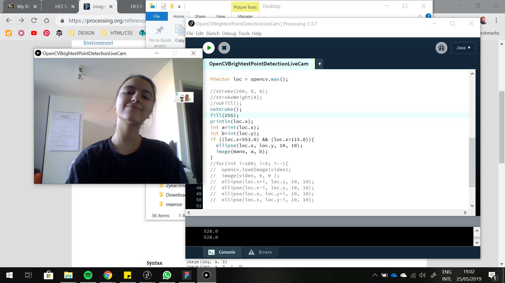
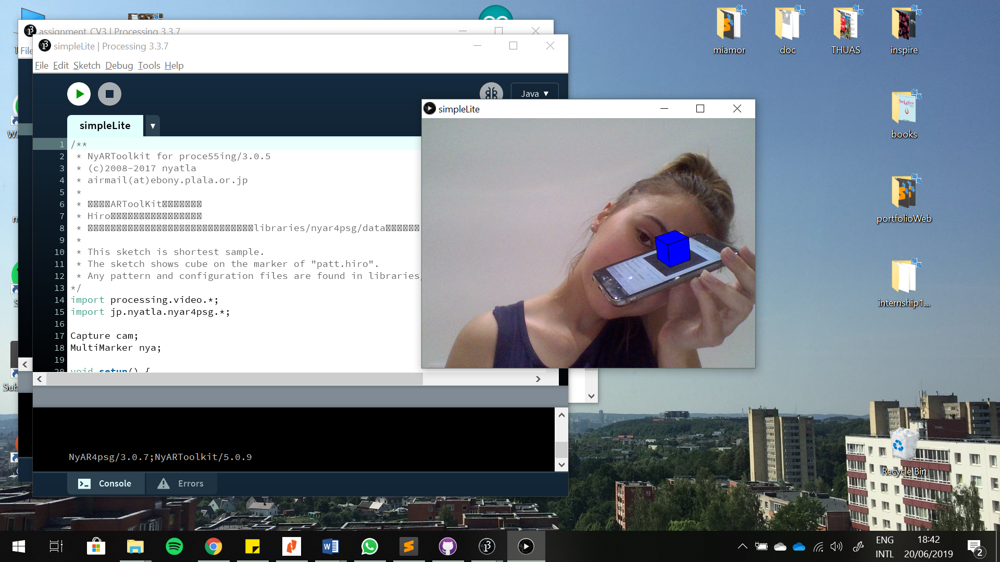

This is the third workshop.
I wrote a program that draws three ellipses at various locations, with various colors in various widths and heights and with and without borders of various colors.
I wrote a program that draws at least four different shapes that aren't circles in various colors and are at various locations.
I wrote a program that draws at least two different shapes, with various colors, which are also interactive.
 I adjust the code, that recognises faces so that a circle is drawn instead of a rectangle.
I adjusted the examplary code so that every recognised face gets an 'anonymous' black bar in front of his eyes.
I adjusted the code of one of the example, OpenCVBrightestPointDetectionLiveCam to be exact, so that the Bare Bears are displayed on the brightest point.
I took a screenshot of one of the augmented markers provided.
